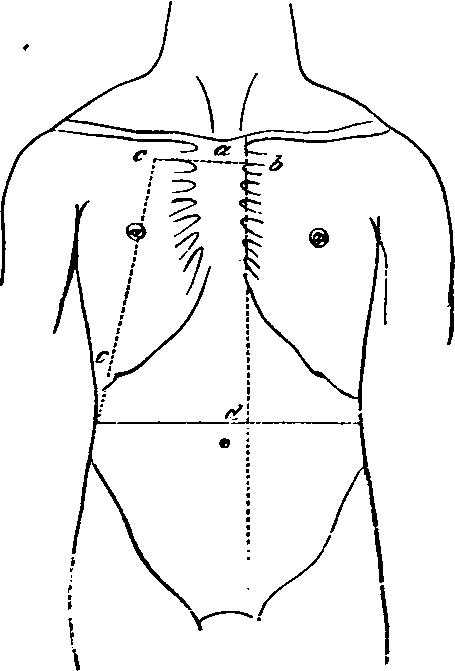

A Dissection To Expose The Vena Azygos Major
Description
This section is from the book "A Manual Of Dissections Of The Human Body", by R. E. Carrington. Also available from Amazon: A manual of dissections of the human body.
A Dissection To Expose The Vena Azygos Major
Position
The body lying on its back.
I
The Thorax1 is opened, and the anterior part of its bony wall taken away, with the soft parts attached, by the following dissection— a. Cut through the Manubrium just below the line of junction of the first Costal cartilages with it.
1 For an account of the structures divided, see the dissections of the Trachea and Internal Mammary arteries.
b. Divide through the junctions of the left Costal cartilages with the Sternum, from the second to the seventh inclusive.
c. Cut through the ribs on the right side, in a line leading from a point four inches from the middle line above to the tip of the tenth rib below. d. Open the Abdomen by a crucial incision, the trans-verse one of which should reach between the tips of the tenth ribs and the vertical to the left of the Xiphoid cartilage.
No. 9.
e. Remove the piece of chest wall included between the above incisions, and the right upper flap of the Abdominal wall, cutting through the attachments of the Diaphragm to the inner surface of the ribs, the Bound, and part of the Suspensory ligaments of the Liver. The other flaps are to be turned outwards. The following parts will be now exposed—
A. In The Chest
1. Bight Lung collapsed, and its root.
2. The Pericardium in the median line, covered by areolar tissue, fat, and lymphatics, and the remains of the Thymus gland.
3. The process of deep Cervical fascia coming from above to the arch of the Aorta and the Pericardium. Remove the areolar tissue, fascia, and lymphatics, and expose—
4. The right and left Innominate veins, their junction, and the commencement of the Superior Vena Cava. The Inferior Thyroid, the Superior Intercostal, the right Internal Mammary branches are seen joining their corresponding Innominate trunks.
5. The arch of the Aorta, giving off the Innominate, left Carotid, and left Subclavian trunks.
6. The right Phrenic nerve in front of the root of the lung, and the left Phrenic crossing the Aortic arch. The Comes nervi Phrenici artery with each.
7. On the Pericardium small arteries from the Internal Mammary, and veins entering the left Innominate trunk.
H
a. Dissect out the Vena Azygos major, as it arches up and over the root of the right Lung, and enters the Cava; divide the root, and remove the viscus, taking away the ligamentum latum Pulmonis at the same time. The following structures will be cut through—
1. Bight Bronchus.
2. Bight Pulmonary artery.
3. Bight Pulmonary veins.
In this order from before backwards, and above downwards.
4. Bight Bronchial artery and veins.
At the back of the root.
5. Parts of the anterior and posterior Pulmonary plexuses of nerves.
In front and behind respectively.
6. Lymphatics and glands.
b. Hook the divided root well over to the left side, and with it the Heart, contained in the Pericardium.
c. Remove the Pleura, as it is reflected from the posterior wall of the chest, over the bodies of the vertebræ, to the back of the root of the Lung. The Œsophagus will be found to be drawn to the left by the traction on the root of the Lung and Pericardium. There will now be exposed—
1. The Vena Azygos major, as it lies on the right side of the bodies of the vertebræ ; the right Intercostal veins, except those of the first two spaces, will be found joining it, the right Bronchial vein opens into it near its termination. The Vena Azygos minor inferior crosses the body of the seventh or eighth Dorsal vertebræ to join it, and the Vena Azygos minor superior may be found joining the Azygos major above, when present. Both these structures pass beneath the Aorta.
2. The Thoracic Aorta is seen lying to the left side of the Azygos major and the Intercostal arteries, except those of the first and a part of the second spaces passing behind the vein.
3. The Thoracic duct in the interval between the Vein and the Aorta.
4. The (Esophagus to the left, with the Vagi nerves in front and behind.
5. The right gangliated Sympathetic cord lies externally on the heads of the ribs, giving from the second, third, and fourth ganglia (Quain), or third and fourth (Ellis) branches to the posterior Pulmonary plexus. The ganglia are also seen giving off the Splanchnic nerves which run down outside the Vena Azygos. The great Splanchnic arising by roots from the fifth or sixth to the ninth or tenth ganglia inclusive. The small from the tenth or eleventh, and the smallest from the twelfth. These are seen perforating the Diaphragm close to one another. Externally the ganglia are seen to send two branches to each Intercostal nerve.
6. The posterior wall of the chest will be seen formed by the ribs and Intercostal muscles. The internal muscles as far as the angles, and a thin fascia prolonged inwards to the vertebra from them. On removal of this fascia, the Intercostal nerve, artery, and vein will be seen having the following relations to each other in the lower spaces, i.e. vein, artery, nerve from above downwards; in the upper spaces the nerve is at first highest. The External Intercostal muscles are seen underneath the vessels and nerves extending as far inwards as the tubercles of the ribs.
B. In The Abdomen
On opening the Abdomen as described above, the following structures are exposed—
1. The Liver with the Bound and Suspensory ligaments in the middle line, and the tip of the Gall bladder on the right.
2. The Stomach on the left.
3. The great Omentum.
4 The Cæcum and ascending Colon, if distended.
III
a. Raise the Liver, and dissect out in the small Omentum the Bile duct on the right, the Hepatic artery and its branches on the left, and the Portal vein behind. Divide these structures.
b. Raise the great Omentum on to the ribs, and fix it there. Turn the small Intestine over to the left, and dissect out the Superior Mesenteric vessels as they pass over the third part of the Duodenum.
c. Ligature and divide the Hepatic flexure of the Colon, cut through the conjoined transverse Mesocolon and great Omentum from before backwards, dividing the middle Colic artery and vein; turn the ends of the Colon right and left.
d. Remove the Peritoneum between the Duodenum, and ascending Colon above, and the median line and ascending Colon below, and with it the Ileo and right Colic arteries, veins, and nerves, and take away the ascending layer of the transverse Meso-colon, in front of the Duodenum and Pancreas.
e. The Stomach is already pulled up, and fixed to the left ribs by the portion of great Omentum remaining. Divide now the Duodenum at its junction with the Pylorus, and again below on the right side of the Superior Mesenteric vein. Cut through the head of the Pancreas, and take it away with the piece of Duodenum included between the two incisions. The Pancreatico-duodenalis arteries, superior and inferior, will be divided and taken away, and the duct of the gland with the arteria Pancreatica magna cut through. The Bile duct will be removed, being already cut above. The Portal vein must be again divided just after the junction of the Splenic with the Superior Mesenteric, and taken away.
There will now be exposed—
1. The Abdominal Aorta and the following branches, the Phrenics, the Coeliac axis, the Gastric, Splenic, the divided Hepatic and its Gastro-duodenal branch, the right, Supra-renal, Renal, Spermatic, and Lumbar branches.
2. The Inferior Vena Cava on its right side joined by the following veins, right Phrenic, Supra-renals, which however may enter the Renals (also seen), the right Spermatic, the Lumbar of both sides, and the Ascending Lumbar when present.1
3. The right Crus of the Diaphragm on the right of the Aorta.
1 Vide Quain, vol. i. p. 473.
4. The right Psoas muscle, with the Genito-crural nerve, Spermatic artery, and Ureter lying upon it.
5. The Kidney, the upper end concealed by the Liver.
6. The Solar plexus and its prolongations along the vessels, viz.:—The Cœliac, Renal, Supra-renal, Phrenic plexuses.
7. The Splanchnic nerves perforating the right Crus of the Diaphragm. The endings of the small and lesser in the Cœliac and Renal plexuses respectively. The Semilunar ganglion and the ending of the greater, are hidden by the Inferior Cava on this side.
IV
a. Cut through the Coronary and left Lateral ligaments of the Liver as far as the Inferior Cava.
b. Divide the Diaphragm from before backwards, passing between the foramen Quadratum and opening for the Œsophagus down through the decussation of the Crura into the Aortic opening, cutting through the right Phrenic Artery; now pull the halves of the Diaphragm to the right and left.
c. Divide the Inferior Cava at its entrance into the right Auricle.
d. Pull the Liver and with it the lower portion of the Inferior Cava well over to the right side, and fix it there.
e. Divide the Supra-renal, Renal, and Spermatic arteries.
f. Pull the upper part of the Aorta to the left.
g. Remove the right Semilunar ganglion, which will be displayed by the removal of the Inferior Vena Cava, and the right side of the Solar plexus.
There will now be exposed—
1. The whole length of the Vena Azygos Major.
2. The right Lumbar Sympathetic cord.
3. The Receptaculum chyli and the Thoracic duct.
Continue to:
- prev: A Dissection To Expose The Anterior Surface Of The Trachea
- Table of Contents
- next: A Dissection To Expose The Anterior And Posterior Circumflex Arteries